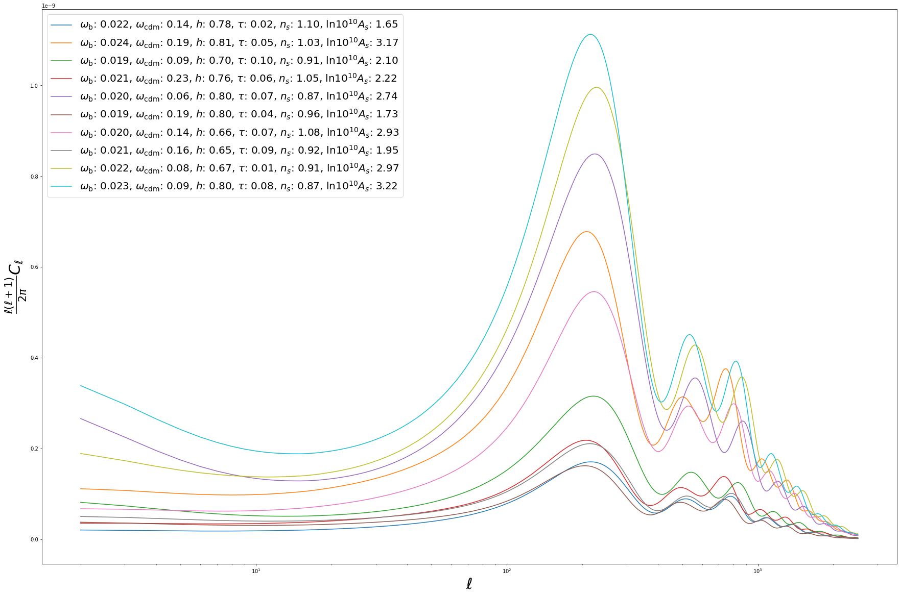
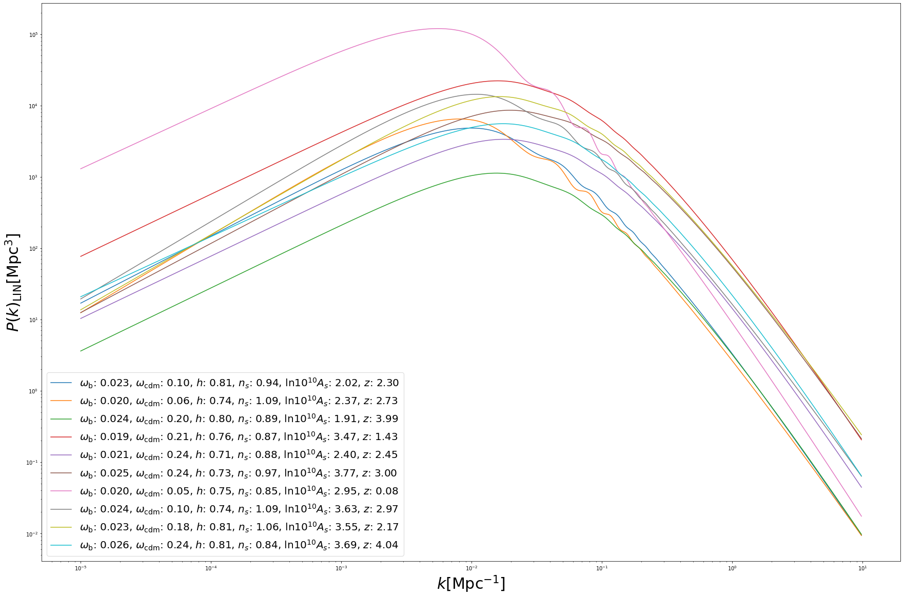

INTRODUCTION¶
This notebook can also be run on Colab. 
In this notebook we will explore the main features of the emulators for cosmological power spectra implemented in the CosmoPower class cosmopower_NN. We will consider two examples: the first one is an emulator for CMB TT power spectra, the second one is an emulator of the linear matter power spectrum.
Note 1: there is, in fact, no fundamental difference in the way cosmopower_NN works for CMB and \(P(k)\) power spectra. Here we are explicitly showing both cases for completeness, but the internal workings of the emulator are the same and the way one obtains predictions from the emulator also does not change;
Note 2: similarly, there is no fundamental difference between different types of CMB power spectra (TT,TE,EE,PP) or linear/non linear \(P(k)\). In this notebook we will consider examples involving CMB TT power spectra and linear matter power spectrum, but the same syntax can be used for all types of spectra emulated with cosmopower_NN.
PRELIMINARY OPERATIONS¶
import tensorflow as tf
import numpy as np
import matplotlib.pyplot as plt
import os
from IPython.display import display, clear_output
cosmopower_NN - CMB example¶
A cosmopower_NN model is a direct mapping between cosmological parameters and (log)-power spectra.
Let’s consider a pre-trained model emulating Cosmic Microwave Background temperature (TT) power spectra. In the CosmoPower repository we can find an example of such a pre-trained model in the trained_models folder (cmb_TT_NN.pkl).
Loading a saved model¶
Loading a saved cosmopower_NN model is as simple as instantiating a cosmopower_NN instance with:
-
the attribute
restoreset toTrueand -
the attribute
restore_filenamepointing to the.pklfile where the model is saved (without the.pklsuffix).
import os
ipynb_path = os.path.dirname(os.path.realpath("__file__"))
import cosmopower as cp
# load pre-trained NN model: maps cosmological parameters to CMB TT log-C_ell
cp_nn = cp.cosmopower_NN(restore=True,
restore_filename=os.path.join(ipynb_path, '../../cosmopower/trained_models/CP_paper/CMB/cmb_TT_NN'))
Exploring the model features¶
Now that the model is loaded, we can explore some its features. First, let’s see what are the parameters that the emulator was trained on:
print('emulator parameters: ', cp_nn.parameters)
emulator parameters: ListWrapper(['omega_b', 'omega_cdm', 'h', 'tau_reio', 'n_s', 'ln10^{10}A_s'])
Next, let’s see how the emulator samples the \(\ell\) multipoles for this CMB case:
print('sampled multipoles: ', cp_nn.modes)
print('number of multipoles: ', cp_nn.n_modes)
sampled multipoles: [ 2 3 4 ... 2506 2507 2508]
number of multipoles: 2507
The model is a direct neural network mapping 6 parameters into 2507 multipoles. Let’s find out its internal architecture:
print('hidden layers: ', cp_nn.n_hidden)
hidden layers: ListWrapper([512, 512, 512, 512])
The model has 4 hidden layers, each with 512 nodes.
Obtaining predictions¶
Now let’s explore how cosmopower_NN produces power spectra predictions for a given set of input parameters. All CosmoPower models take in input a Python dict of parameters, for example:
# # create a dict of cosmological parameters
params = {'omega_b': [0.0225],
'omega_cdm': [0.113],
'h': [0.7],
'tau_reio': [0.055],
'n_s': [0.96],
'ln10^{10}A_s': [3.07],
}
The reason for using input dictionaries is that the user does not need to be concerned with ordering the input parameters.
The loaded model is an emulator of log-power spectra. This was done to reduce the dynamic range of the training set, which helps considerably the emulator during training. Therefore, a forward pass of the input parameters on the trained network (with the method predictions_np) would result in a prediction for the log-power spectrum:
# predictions (= forward pass thorugh the network)
log_spectrum_cosmopower_NN = cp_nn.predictions_np(params)
Sometimes it is convenient to output log-spectra, e.g. for interpolation purposes. However, if the user is only interested in spectra, the conversion from log-spectra to spectra can also be done internally by cosmopower_NN, with the method ten_to_predictions_np:
# predictions (= forward pass thorugh the network) -> 10^predictions
spectrum_cosmopower_NN = cp_nn.ten_to_predictions_np(params)
COMPARING WITH CLASS¶
Let’s compare the prediction for the TT power spectrum from CosmoPower with that from the Boltzmann code Class. We first need to clone the CLASS repository, compile and install the code:
!pip install cython
!git clone https://github.com/lesgourg/class_public
%cd class_public
!make clean
!make
%cd python
!python setup.py build
!python setup.py install
The call to Class to obtain the same power spectrum prediction obtained from CosmoPower is as follows:
from classy import Class
cosmo = Class()
# Define cosmology (what is not specified will be set to CLASS default parameters)
params = {'output': 'tCl lCl',
'l_max_scalars':2508,
'non linear': 'hmcode',
'nonlinear_min_k_max': 20,
'lensing': 'yes',
'N_ncdm' : 0,
'N_eff' : 3.046,
'omega_b': 0.0225,
'omega_cdm': 0.113,
'h': 0.7,
'tau_reio': 0.055,
'n_s': 0.96,
'ln10^{10}A_s': 3.07,
}
cosmo.set(params)
cosmo.compute()
cls = cosmo.lensed_cl(lmax=2508)
spectrum_class = cls['tt'][2:]
cosmo.struct_cleanup()
cosmo.empty()
Now let’s plot a comparison between the CosmoPower and Class predictions:
ell_modes = cp_nn.modes
fig = plt.figure(figsize=(20,10))
true = spectrum_class*ell_modes*(ell_modes+1)/(2.*np.pi)
pred = spectrum_cosmopower_NN[0]*ell_modes*(ell_modes+1)/(2.*np.pi)
plt.semilogx(ell_modes, true, 'red', label = 'CLASS', linewidth=5)
plt.semilogx(ell_modes, pred, 'blue', label = 'COSMOPOWER NN', linewidth=5, linestyle='--')
plt.xlabel('$\ell$', fontsize='30')
plt.ylabel('$\\frac{\ell(\ell+1)}{2 \pi} C_\ell$', fontsize='30')
plt.legend(fontsize=20)

BATCH PREDICTIONS¶
So far we considered predictions for a single set of input parameters. However, to fully harvest the computational power of neural networks, it is often convenient to consider batch predictions for multiple sets of input parameters. These can be easily obtained from cosmopower_NN by feeding the emulator with a dict of np.arrays of parameters. For example, let’s create 10 random sets of cosmological parameters:
omega_b = np.random.uniform(low=0.01875, high=0.02625, size=(10,))
omega_cdm = np.random.uniform(low=0.05, high=0.255, size=(10,))
h = np.random.uniform(low=0.64, high=0.82, size=(10,))
tau_reio = np.random.uniform(low=0.01, high=0.1, size=(10,))
n_s = np.random.uniform(low=0.84, high=1.1, size=(10,))
lnAs = np.random.uniform(low=1.61, high=3.91, size=(10,))
Now let’s collect these 10 sets of cosmological parameters into a dict of np.arrays:
# create a dict of cosmological parameters
batch_params = {'omega_b': omega_b,
'omega_cdm': omega_cdm,
'h': h,
'tau_reio': tau_reio,
'n_s': n_s,
'ln10^{10}A_s': lnAs,
}
We can now simultaneously obtain predictions for all of the 10 parameter sets. Note that the syntax is unchanged w.r.t. the single-set case!
# predictions (= forward pass thorugh the network) -> 10^predictions
batch_spectra_cosmopower_NN = cp_nn.ten_to_predictions_np(batch_params)
fig = plt.figure(figsize=(30,20))
for i in range(10):
pred = batch_spectra_cosmopower_NN[i]*ell_modes*(ell_modes+1)/(2.*np.pi)
label = '$\omega_{{\mathrm{{b}}}}$: {:1.3f}, $\omega_{{\mathrm{{cdm}}}}$: {:1.2f}, $h$: {:1.2f}, $\\tau$: {:1.2f}, $n_s$: {:1.2f}, $\\mathrm{{ln}} 10^{{10}}A_s$: {:1.2f}'.format(batch_params['omega_b'][i], batch_params['omega_cdm'][i], batch_params['h'][i], batch_params['tau_reio'][i], batch_params['n_s'][i], batch_params['ln10^{10}A_s'][i])
plt.semilogx(ell_modes, pred, label = label)
plt.xlabel('$\ell$', fontsize='30')
plt.ylabel('$\\frac{\ell(\ell+1)}{2 \pi} C_\ell$', fontsize='30')
plt.legend(fontsize=20)

cosmopower_NN - \(P(k)\) example¶
As explained above, there is no fundamental difference between the way cosmopower_NN works for CMB and matter power spectra. For this reason here we will simply run the same code cells above, this time for a linear \(P(k)\) emulator.
Note 1: the sampled modes here are \(k\)-modes.
Note 2: the units are Mpc\(^{-1}\) for the \(k\)-modes and Mpc\(^3\) for \(P(k)\).
Note 3: the redshift \(z\) is treated as an additional parameter fed to cosmopower_NN.
# load pre-trained NN model: maps cosmological parameters to linear log-P(k)
cp_nn = cp.cosmopower_NN(restore=True,
restore_filename=os.path.join(ipynb_path, '../../cosmopower/trained_models/CP_paper/PK/PKLIN_NN'))
print('emulator parameters: ', cp_nn.parameters)
emulator parameters: ListWrapper(['omega_b', 'omega_cdm', 'h', 'n_s', 'ln10^{10}A_s', 'z'])
print('sampled k-modes: ', cp_nn.modes)
print('number of k-modes: ', cp_nn.n_modes)
print('hidden layers: ', cp_nn.n_hidden)
hidden layers: ListWrapper([512, 512, 512])
# create a dict of cosmological parameters
params = {'omega_b': [0.0225],
'omega_cdm': [0.113],
'h': [0.7],
'n_s': [0.96],
'ln10^{10}A_s': [3.07],
'z': [0.5],
}
# predictions (= forward pass thorugh the network)
log_spectrum_cosmopower_NN = cp_nn.predictions_np(params)
# predictions (= forward pass thorugh the network) -> 10^predictions
spectrum_cosmopower_NN = cp_nn.ten_to_predictions_np(params)[0]
COMPARING with CLASS¶
k_modes = cp_nn.modes
cosmo = Class()
# Define your cosmology (what is not specified will be set to CLASS default parameters)
params = {'output': 'tCl mPk',
'z_max_pk': 5,
'P_k_max_1/Mpc': 10.,
'nonlinear_min_k_max': 100.,
'N_ncdm' : 0,
'N_eff' : 3.046,
'omega_b': 0.0225,
'omega_cdm': 0.113,
'h': 0.7,
'n_s': 0.96,
'ln10^{10}A_s': 3.07,
}
# Set the parameters to the cosmological code
cosmo.set(params)
cosmo.compute()
z = 0.5
spectrum_class = np.array([cosmo.pk(ki, z) for ki in k_modes])
pred = spectrum_cosmopower_NN
true = spectrum_class
fig = plt.figure(figsize=(20,10))
plt.loglog(k_modes, true, 'red', linewidth=5, label = 'CLASS')
plt.loglog(k_modes, pred, 'blue', label = 'COSMOPOWER NN', linewidth=5, linestyle='--')
plt.xlabel('$k$ [Mpc$^{-1}]$', fontsize=20)
plt.ylabel('$P_{\mathrm{LIN}}(k) [\mathrm{Mpc}^3]$', fontsize=20)
plt.legend(fontsize=20)

Batch predictions work the same way as in the CMB case:
omega_b = np.random.uniform(low=0.01875, high=0.02625, size=(10,))
omega_cdm = np.random.uniform(low=0.05, high=0.255, size=(10,))
h = np.random.uniform(low=0.64, high=0.82, size=(10,))
n_s = np.random.uniform(low=0.84, high=1.1, size=(10,))
lnAs = np.random.uniform(low=1.61, high=3.91, size=(10,))
z = np.random.uniform(low=0.0, high=5.0, size=(10,))
# create a dict of cosmological parameters
batch_params = {'omega_b': omega_b,
'omega_cdm': omega_cdm,
'h': h,
'n_s': n_s,
'ln10^{10}A_s': lnAs,
'z': z,
}
# predictions (= forward pass thorugh the network) -> 10^predictions
batch_spectra_cosmopower_NN = cp_nn.ten_to_predictions_np(batch_params)
fig = plt.figure(figsize=(30,20))
for i in range(10):
pred = batch_spectra_cosmopower_NN[i]
label = '$\omega_{{\mathrm{{b}}}}$: {:1.3f}, $\omega_{{\mathrm{{cdm}}}}$: {:1.2f}, $h$: {:1.2f}, $n_s$: {:1.2f}, $\\mathrm{{ln}} 10^{{10}}A_s$: {:1.2f}, $z$: {:1.2f}'.format(batch_params['omega_b'][i], batch_params['omega_cdm'][i], batch_params['h'][i], batch_params['n_s'][i], batch_params['ln10^{10}A_s'][i], batch_params['z'][i])
plt.loglog(k_modes, pred, label = label)
plt.xlabel('$k [\mathrm{{Mpc}}^{{-1}}]$', fontsize='30')
plt.ylabel('$P(k)_{{\mathrm{{LIN}}}} [\mathrm{{Mpc}}^{{3}}]$', fontsize='30')
plt.legend(fontsize=20)
